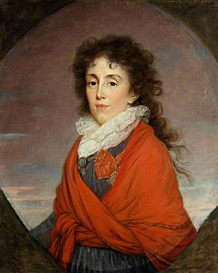

Личная жизнь
Михаил Илларионович Кутузов был выдающимся русским полководцем, который сыграл ключевую роль в Отечественной войне 1812 года против Наполеоновской Франции. Однако его личная жизнь также была интересной и заслуживающей внимания.
Кутузов родился 5 сентября 1745 года в семье потомственных военных. Его отец служил при дворе императрицы Елизаветы Петровны, а мать происходила из знатного рода Голенищевых-Кутузовых. В юности Михаил Илларионович получил отличное образование, изучал математику, историю, философию и другие науки.

В 1774 году Кутузов женился на Екатерине Ильинишне Бибиковой, дочери генерал-поручика Ильи Александровича Бибикова. У них было шестеро детей: два сына (Николай и Сергей) и четыре дочери (Анна, Прасковья, Елизавета и Катерина).
Несмотря на то, что Кутузов уделял много времени военной службе, он всегда старался поддерживать теплую семейную атмосферу. Он часто писал письма своей жене, когда находился вдали от дома, и заботился о благополучии своих детей.
Однако личная жизнь Кутузова была омрачена трагедией. В 1776 году его первая жена Екатерина умерла после рождения четвертого ребенка. После этого Кутузов женился вторично на Марии Андреевне Нарышкиной, но этот брак не был счастливым. Мария Андреевна была известна своими любовными связями, и Кутузов страдал от ее неверности.
Таким образом, личная жизнь Михаила Илларионовича Кутузова была сложной и неоднозначной, но она не помешала ему стать одним из величайших русских полководцев в истории.